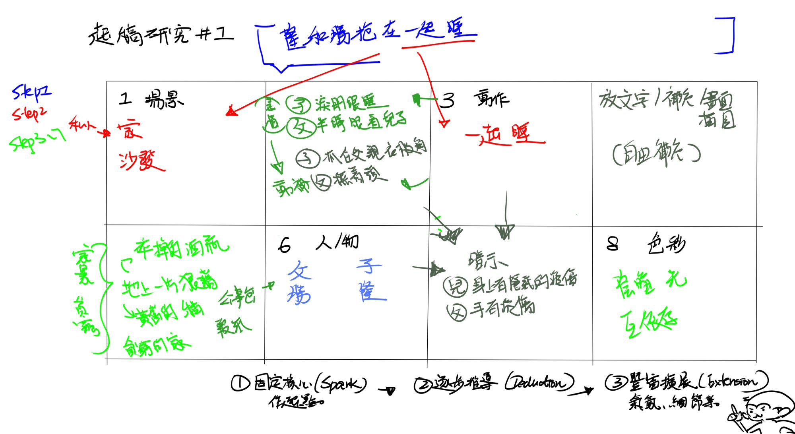

截至2026年6月6日，隨時間優化。
猩其一的疑惑1
最近思考自己為什麼進步那麼慢了，嘗試了寫作後，終於察覺到一件事。
不是因為畫得不夠多，也不是因為不夠努力。
是因為我根本沒有「想畫的主題」。
聽起來廢話，但沒有主題這件事比我一直以為的嚴重很多。
就像在TRPG裡面，完全沒有點技能點，卻希望每個骰子都骰出成功一樣。
實際上在畫畫的時候，我根本不是在「從無限可能裡創造東西」，我是在我自己已知的知識庫裡面，快速篩選選項，然後把一堆勉強合格的判斷導向一個還OK的結果。
問題是——如果我連主題都沒有，我就連「合格」的標準在哪裡都不知道。我沒辦法評判任何選擇的好壞。每一步都是盲猜，每一次骰子都只有夙敗。
就算只是畫「吃東西的火柴人」好了，看起來很簡單，但我還是得決定——
他用手抓還是用筷子？是狼吞虎咽還是斯文地吃？他看食物還是看畫面外？要不要畫桌子？吃拉麵要有碗，吃麵包可以在街上舉著——
就算是火柴人，那些需要決定的骰子還等著我去骰，每一次更深一步推進就迎來新一次骰子，而我沒畫過，就妄圖從幾兆億萬個靈感骰子中尋找我的技能百面骰再骰出成功。
我發現了火柴人的確把形式簡化了，但判斷沒有消失。
疑惑2.熱情的消失
然後還有另一個問題：我現在26歲了，已經不是那種「一沉迷就瘋狂產圖」的狀態了。
熱忱還在，但需要很強的動機才能啟動，而很不巧作為一個可悲的成年人，我常常覺得遊戲太浪費時間於是就放棄﹑雖然我曾經有沉迷的角色或作品，但往往只能支撐我最多半個月的心流時間。
而我可能真的能提起興趣的是原創角色，但原創的問題是——什麼都要自己決定。
二創可以直接套用原作者建好的世界，腦子只要處理「我想讓這個角色在這個情況下怎麼反應」就好。
原創要自己建世界、自己定義人物、自己決定邏輯……每一個決定都會牽動其他決定，整個太模糊，大腦就會因為運算不足直接放棄。
所以我就很煩惱.....反正我只會用格子筆記，所以就弄了一個8格思考。
方法很簡單粗暴，讓我簡短來說就是這樣
先畫8個格子。其中4格標上：場景、人物、動作、色彩。另外4格空著不管。
然後不用按順序，隨便從哪一格開始都行。
如果卡住了——就放棄想畫面，改成寫一句像小說的句子。
台詞也好、動作描述也好、就是腦中最直接冒出來的那句話。
然後把這句話拆開，填進那4個標籤格子裡。
最後剩下的空白格，就隨便補細節——表情、衣服、傷痕、旁邊的物件、環境線索，什麼都可以。
我的詳細發想過程
先畫好8個格子，然後隔一格標一個詞：場、人(物)、動作、色彩。
剩下的格子空著，先不管。
從哪格開始都行，我這次先挑了人物格——填上我的OC父子，勝和隆，設定是家暴加互依存的關係。
填完之後完全不知道下一步要幹嘛，腦袋空掉。
所以我換了個方式，不想畫面，改成先想一句像小說裡面會出現的句子。
台詞、動作、描述都可以，什麼都行。
我想到的是——「隆和勝抱在一起睡」。
然後拿這句話去拆。
一起睡，需要一個地方睡 → 場景格填「沙發、家」。
抱在一起睡 → 動作格填「抱在一起」「睡眠」。
色彩格本來寫了「溫暖」，但後來覺得不對，配合互依存的氣氛改成「陰暗光」。
前面4格有東西了之後，再回頭去填空白格。
這時候就比較好發揮——既然是家暴後的場景，地上應該是一片狼藉，
所以填了碎啤酒瓶、黃舊的牆壁這些。
表情：一個臉上有淚痕、閉著眼睛睡，另一個半睜眼看著兒子。
動作再補充：一個緊抓著父親衣服不放，一個手在撫著頭。
然後繼續延伸——兒子身上有被遮住的瘀傷，父親手上也有。
背景放了公事包（暗示兒子在上班）、父親旁邊的舊報紙。
大概就是這樣，從一句話開始，慢慢把格子填滿的感覺。因為感覺可能說得太複雜，隨手扔了給AI君簡單分拆我的步驟。

步驟一：建立網格與標籤
畫出 8 個格子。
在其中 4 個格子寫上固定標籤：【場景】、【人物/物件】、【動作】、【色彩/氛圍】。
保留 4 個格子完全空白，先不要管它們。
步驟二：隨機起手式
不要強迫自己從頭開始。在這 4 個有標籤的格子裡，隨便挑選一個你現在最有想法的格子填寫。
範例實作：選擇了【人物/物件】，填入「原創角色父子：勝與隆，家暴及互依存關係」。
步驟三：文字破冰
觸發條件： 當填完一個格子，大腦卡住、想像不到其他格子的內容時使用。
行動： 跳脫畫圖的思維，寫下一句「像小說一樣的句子」。這可以是台詞、動作描述、或是單純的情境。
範例實作：寫下句子「隆和勝抱在一起睡」。
步驟四：基礎補全
利用「步驟三」寫下的那句話作為線索，回推並填滿剩下的固定標籤格。
範例實作：
因為句子提到「一起睡」 ➔ 【場景】填入「沙發、家」。
因為句子提到「抱在一起睡」 ➔ 【動作】填入「抱在一起、睡眠」。
配合人物設定與情境 ➔ 【色彩/氛圍】填入「陰暗光、互依存的氣氛」。
步驟五：空白格的化學延伸
現在基礎 4 格已經完成，畫面骨架出來了。接下來，根據這 4 格的設定，在剩下的 4 個空白格中隨意填寫「補充細節」。
延伸方向參考清單（可自由選擇填寫）：
- 劇情物件（環境敘事）： 因為是家暴父子 ➔ 填入「地上一片狼藉、碎掉的啤酒瓶、黃舊的牆」。
- 微表情與小動作： 補充睡眠時的狀態 ➔ 填入「一個有淚痕閉眼睡，一個半睜眼看向兒子；一個緊抓父親衣服不放，一個撫著頭」。
- 隱秘線索（傷痕/特徵）： 補充暴力與關係的暗示 ➔ 填入「兒子身上有隱藏的瘀傷，父親手也有瘀傷」。
- 身份與日常暗示： 補充角色的社會背景 ➔ 填入「背景有成年男人的公事包（兒子的工作）、父親看的報紙」。

文字破冰延伸
先想到一句像小說會出現的描述句子
1.「不要離開我」>既然是對話即存在人物A，這句話存在A想對話的對象>可能讓畫面讓其他角色漸漸離開a的構圖，或是A抓住B的手說不要離開我。
2.「A和B站在山上」>可以想兩人是爬山的同伴？(陽光普照或冰天雪地的困難感也可以)可以想是A和B在逃亡?(增加有人追著的緊迫感)
3.紅色的血灑在A的衣服上>殺人了？自傷了？血是自己的嗎？發生在哪？可以這樣考慮
4.「一片花海遠處有湖」➔湖旁有動物在喝➔補上獵人(➔拿出箭準備射殺)OR少女(➔在花海處想靠近)
──猩其一